Nächste Seite: Flüssigkeitspartikel Aufwärts: Implizite Raumpartitionierung Vorherige Seite: Implizite Raumpartitionierung Inhalt
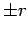
entfernt befinden, also ohne räumliche Nähe den selben Zellindex erhalten.
Auf diese Weise liegen zwar Partikel aus in  -Richtung benachbarten Zellen in der sortierten Liste nahe beieinander, nicht aber Partikel, die in
-Richtung benachbarten Zellen in der sortierten Liste nahe beieinander, nicht aber Partikel, die in  - oder
- oder  -Richtung in benachbarten Zellen liegen. In diesem Fall können tausende oder auch nur wenige Partikel zwischen dem betrachteten und dem benachbarten Partikel liegen. Um also alle Kollisionen auflösen zu können, werden Zellen benötigt, die genau diese Grenzen abdecken.
-Richtung in benachbarten Zellen liegen. In diesem Fall können tausende oder auch nur wenige Partikel zwischen dem betrachteten und dem benachbarten Partikel liegen. Um also alle Kollisionen auflösen zu können, werden Zellen benötigt, die genau diese Grenzen abdecken.
|
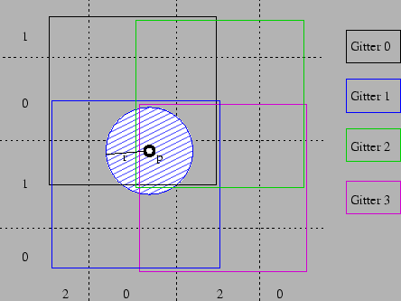 |
Um nun alle Kollisionen auszuwerten, werden alle Flüssigkeitspartikel durchlaufen, jeweils die relevante Sortierung ausgelesen und in der gewählten sortierten Liste so viele nachfolgende und vorhergehende Partikel betrachtet, wie diese einen noch relevanten Zellindex besitzen. Da in 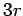 -Richtung zwei Bit mehr gespeichert werden, ist der Bereich, über den gesucht wird, nicht
-Richtung zwei Bit mehr gespeichert werden, ist der Bereich, über den gesucht wird, nicht  , sondern nur
, sondern nur  -Zelle, der Nachfolger und der Vorgänger.
-Zelle, der Nachfolger und der Vorgänger.
Hier ließe sich durch das Verwenden weiterer Bits eine noch feinere Unterteilung realisieren.
| Bit | Größe | Verwendung bei | |
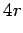 |
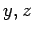 |
||
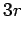 |
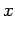 |
||
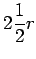 |
|||
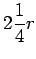 |
|||
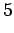 |
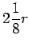 |
||
Da alle Kräfte symmetrisch sind, genügt es, bei beiden Kollisionspartnern die inversen Kräfte zu addieren. Um also nicht a mit b und b mit a kollidieren zu lassen, wird jetzt geprüft, ob der Index des Kollisionspartners größer ist als der des aktuellen Partikels. Ist dies der Fall, so wird die eigentliche Interaktion der Partikel berechnet. Um Kontrolle über das Verhalten der Flüssigkeit zu erlangen, verwende ich neben den SPH-Partikeln auch spezielle Partikel, die direkte Veränderungen an den SPH-Partikeleigenschaften bewirken. Diese haben immer einen höheren Index als SPH-Partikel. Näheres dazu in Kapitel 3.2.2 und 5.4.2.
Der Kollisionspartner kann also entweder selbst ein Flüssigkeitspartikel oder ein Kontrollpartikel sein.